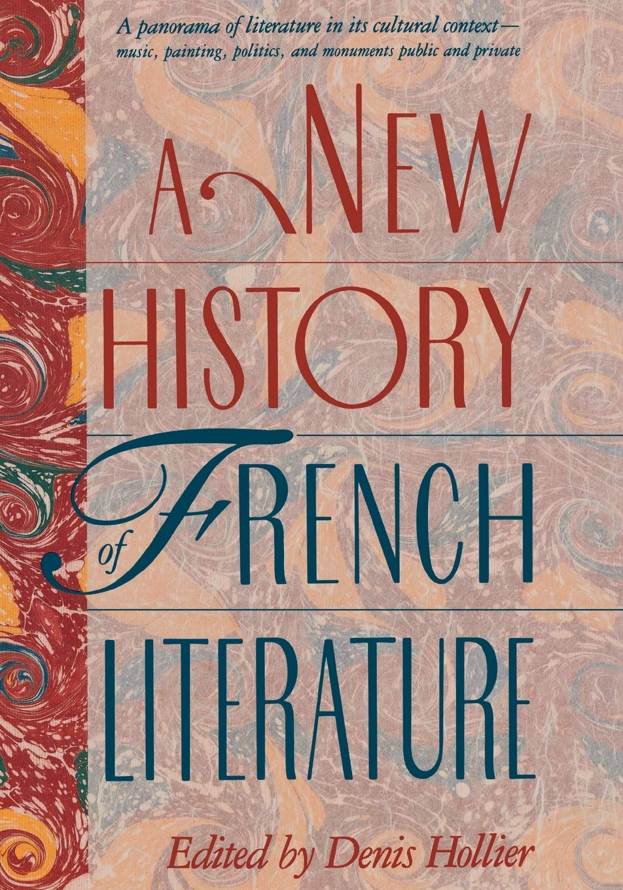
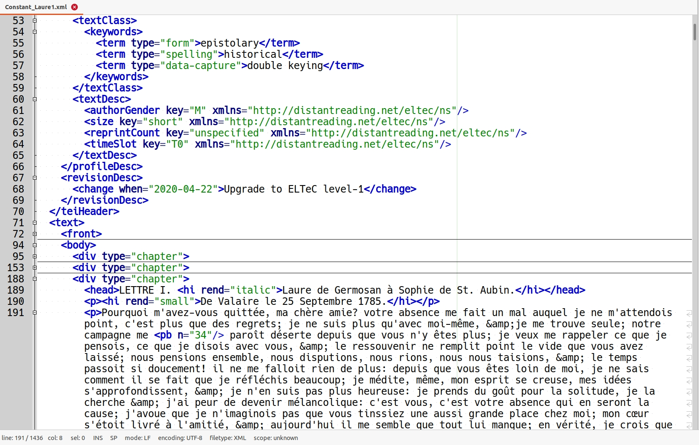
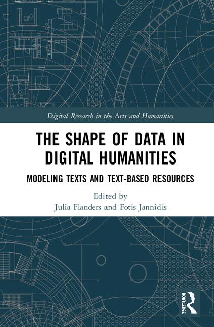
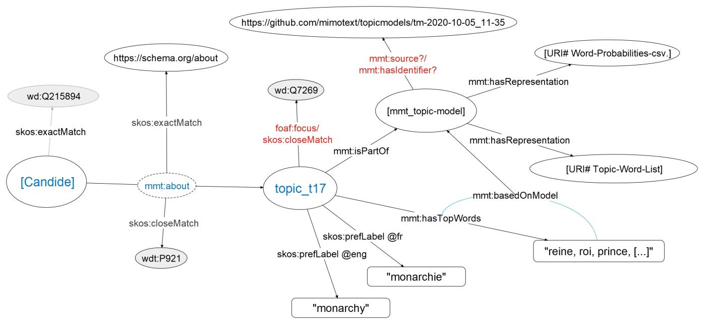
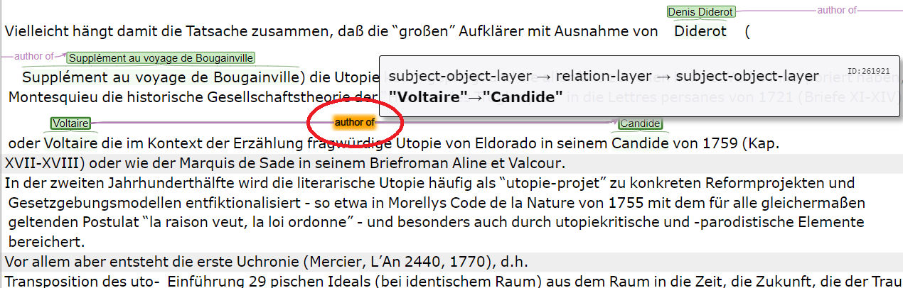
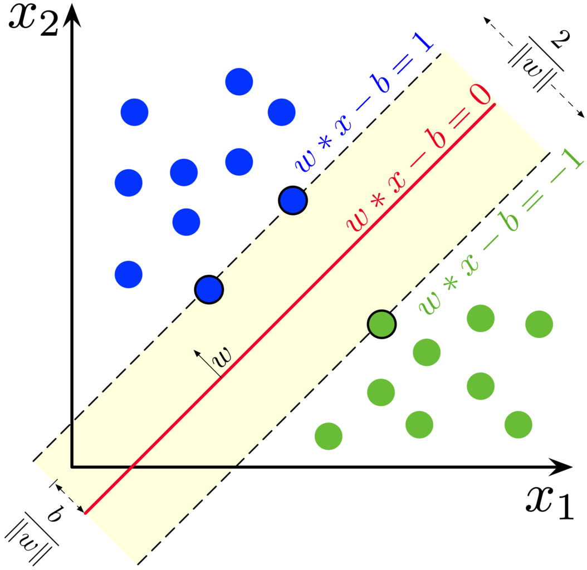
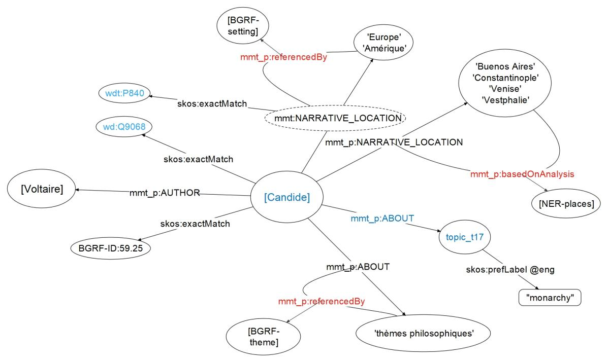

#### How Could Digital Literary Historiography Work? Some Lessons Learned in the MiMoText Project <img height="50" data-src="img/basics/mimotext-logo.png"> <br/> <hr/> <br/> <p>Christof Schöch, with contributions from Maria Hinzmann, Julia Röttgermann, Katharina Dietz, Andreas Lüschow and Anne Klee</p> <br/> <p><strong><emph>DHLab@GS, Univ. of Texas at Austin | October 26, 2020</strong><br/> <a href="https://mimotext.github.io/modeling/">https://mimotext.github.io/literary-history/</a> <hr/> <img height="50" data-src="img/basics/tcdh-slim.png"> <img height="50" data-src="img/basics/uni-trier.png"> <img height="50" data-src="img/basics/mwrlp.svg"> :: - Collaborative project; name collaborators - Funded by the Ministry of Research and Education on the state level - Key questions: - How can we practice Literary Historiography today? - How can we do this in the context of Digital Humanities? -- ## Overview 1. [Introduction: Literary Historiography](#/2) 1. [Metadata (Bibliographies)](#/3) 1. [Data (Corpora)](#/4) 1. [Model (Ontology)](#/5) 1. [Methods (Machine Learning)](#/6) 1. [Unsupervised: Topic Modeling](#/6) 1. [Supervised: Statement Extraction](#/7) 1. [Conclusion](#/8) :: - Basically skip this! -- ## Literary Historiography --- #### How Does Literary Historiography Work? * Goals <!-- .element: class="fragment" data-fragment-index="1" --> * Recover and document the facts of literary history * Provide explanations for the evolution of literature * Sources <!-- .element: class="fragment" data-fragment-index="2" --> * literary works (and other primary sources) * scholarly publications; above all: literary histories * Organizing principles <!-- .element: class="fragment" data-fragment-index="3" --> * countries, periods, movements, genres * similarities and dissimilarities * continuity and change * Explanation of literary evolution <!-- .element: class="fragment" data-fragment-index="4" --> * Changing cultural and socio-historical context * Inner dynamics of the literary system :: - Just go through the items. --- #### (Theory of) Literary Historiography  <br/><small> * Jan-Dirk Müller, "Literaturgeschichte / Literaturgeschichtsschreibung" (1982) * Claus Uhlig, "Current Models and Theories of Literary Historiography" (1987) * David Hollier, *A New History of French Literature* (1989) * David Perkins, *Is Literary History Possible?* (1992) * Jan Borkowski and Philipp David Heine, "Ziele der Literaturgeschichtsschreibung" (2013) </small> :: - Some of the readings; but there is plently more - Literary history is no longer driven by the "grand narrative" - Literary history knows it is a construction of coherence, rather than the recovery of some true coherence - New avenues for literary historiography are being sought. --- #### How can a *Digital* Literary Historiography Work? * Data-driven literary history <!-- .element: class="fragment" data-fragment-index="1" --> * Reconstruct factoids about literature * Reconstruct statements from literary historiography * Coherence through modeling <!-- .element: class="fragment" data-fragment-index="2" --> * Join all statements in a shared data model * Coherence as an emergent property * Two inspirations <!-- .element: class="fragment" data-fragment-index="3" --> * Hollier: fragmentation pushed to the limit * Moretti: Distant Reading (original sense) :: - We just reconstruct two things: - what can be said to be the case regarding the primary sources - flexible view on literary works and their properties; - what literary history has said about them so far - Meta-perspective on canonization, periodisation, critical judgements - Importantly, we don't aim to support the "explanation" / "coherence" part - I think we take Hollier's project to the limit: - extreme fragmentation, not just individual years and works - But individual statements, but aggregated into an emergent whole - We also return to Moretti, in a way - We derive metadata from primary sources and literary history - We provide this as a basis for literary historiography --- #### MiMoText: overview <a href="img/mimotext-overview_eng.png"><img height="300" data-src="img/mimotext-overview_eng.png"></a> <br/> 1. Metadata (bibliographies) 2. Data (corpora) 3. Data Model (ontology of literary history) 4. Methods of Analysis (Machine Learning) :: - Our key goal is to provide a dense network of statements about a specific literary period that are relevant for literary historiography; - a sort of "wikidata for literary history" - More importantly, our goal is to develop the methods and models needed to do this on a large scale. - What we need for this is: - Metadata (Bibliographies) - Data (Corpora) - A Data Model (Ontology) - Methods of Analysis (Machine Learning) -- ## (1) Metadata (Bibliographies) --- #### Bibliographie du Genre romanesque: Candide <a href="img/bgrf-Candide.png"><img height="450" src="img/bgrf-Candide.png"></img></a> <p>Martin / Mylne / Frautschi: <em>Bibliographie<br/>du genre romanesque français, 1751-1800</em>, 1977</p> :: - An example entry in the printed bibliography --- #### Bibliographie modeled as RDF <a href="img/bgrf-Diderot-RDF.png"><img height="500" src="img/bgrf-Diderot-RDF.png"></img></a> :: - This is how this looks like when modeled in RDF (as Linked Open Data) --- #### What's in the bibliography? * Summary statistics <!-- .element: class="fragment" data-fragment-index="1" --> * ~1100 different authors * ~2600 entries (novels) * ~58.000 triples (22/novel) * Further information <!-- .element: class="fragment" data-fragment-index="2" --> * ~720 novels in first person * ~920 in third person * 2210 entries with notes on content :: - Provides us with the best possible approximation of the population - Provides us with some key insights into that production (proportion of narrative perspective, for example) - Also provides statemtents about the content, plot, setting, protagonists of many of the novels (!) -- ## (2) Data (Corpora) --- #### The "roman18" corpus <img height="400" src="img/roman18.jpg"></img> <br/><p>Collection de romans français du dix-huitième siècle (1750-1800) /<br/>Collection of Eighteenth-Century French Novels (1750-1800)</p> :: - Corpus size - Current pilot corpus: 80 volumes - Aim: ca. 100 novels / 150 volumes - Not a representative sample (random sample of population) - Rather, balanced for a few key criteria - decade of writing (1750-1800) - type of narration (memoirs, third-person, epistolary, dialogue) --- #### Sources <img height="300" src="img/laure.jpg"></img> <img height="300" src="img/laure1.jpg"></img> <img height="300" src="img/zely.jpg"></img> <a href="img/zely1.jpg"><img height="300" src="img/zely1.jpg"></img></a> * Various platforms for full texts * Double-keying based on facsimiles * Specifically-trained OCR model (OCR4all) * => Need to unify the text formats :: - Platforms: Wikisource, Gallica, Google Books, etc. --- #### Text Encoding (XML-TEI) <a href="img/laure-tei.jpg"></img></a> * Simple encoding in XML-TEI (ELTeC schema) * Metadata and basic text structure * Modernization: only automatically / "on-the-fly" -- ## (3) Models (Ontology) --- #### Jannidis & Flanders, *The Shape of Data in DH*, 2019  >"The term 'data modeling' in computer science is most typically used in a fairly restrictive sense for the modeling of relational databases, while the digital humanities has a more general understanding of the term: data modeling is the [digital representation] of some segment of the world in such a way to make some aspects computable." --- #### Design decision: Linked Open Data <img height="500" data-src="img/rdf11-primer-example-graph.jpg"> :: - This model enables us to think in terms of minimal statements - Statements consist of atomic units: subject, predicate, object - Question: what are relevant statements? --- #### What are relevant statements? * More precisely: what are the relevant entities and predicates * Beyond bibliographical metadata * Which types of statements are necessary? Which might be useful? * How do we determine / create scholarly consensus around this? * Meta-perspective on disciplinary discourse --- #### Fundamental subjects * Person (role: author, publisher, historical figure) * Publication (type: primary source; scholarly publication) :: - these subjects can of course also become objects --- #### Fundamental statements (1) * person AUTHOR_OF publication * publication PLACE_OF_PUBLICATION place * publication DATE_OF_PUBLICATION year * publication ABOUT keyword :: - predicates and subjects are usually tied together - Basically bibliographical statements - "ABOUT" is an interesting case - Alternatives: - "subject" in Dublin Core - "main_subject" (P921) in Wikidata - Requires using some fixed vocabulary of subject keywords --- #### Fundamental statements (2) * publication NARRATIVE_LOCATION place * publication NARRATIVE_TIME time period * publication EXTENT_WORDS number of words * publication EXTENT_CHAPTERS number of chapters :: - with these statements, we are at the core of literary historiography - These statements, like the "ABOUT keyword" statement, can be obtained from the primary sources (novels) --- ### Fundamental statements (3) * person/publ. DESCRIBED_AS (adjective) * person/publ. MEMBER_OF_GROUP movement * publication INSTANCE_OF_GENRE literary genre * person/publ. SIMILAR_TO person/publ. * person/publ. DISSIMILAR_TO person/publ. * person/publ. INFLUENCED_BY person/publ. :: - These statements can really only be derived from scholarly literature about the novels - Except, based on a large set of data: similarity can be calculated from other properties (similar location, themes, etc.) -- ## (4a) Unsupervised Methods:<br/>Topic Modeling<br/>(Primary Sources) --- #### Topic Modeling <a href="img/tm_blei.png"><img height="500" src="img/tm_blei.png"></img></a> --- #### Two major topics <br/> "monarchy" "love" <br/><img height="250" src="img/topic_002.png"></img> <img height="250" src="img/topic_009.png"></img> --- #### Derived statements * Candide MAIN_SUBJECT "monarchy" * Clarice MAIN_SUBJECT "love" :: - Only superficially simple statements - Topics are only one way to define the "main_subject" - Topics have a precise probability (and probability rank) in each novel - Topics depend on the specific topic model - Models depend on a specific version of our corpus, and parameters - The labels come from a fixed vocabulary we designed - To create some transparency, we indicate the top words of each topic - And we link to the full topic model on Github / Zenodo - All of this needs to be represented in LOD-Model as well. --- #### Topic Modeling as LOD <a href="img/network-of-information_TopMod_231020.jpeg"></img></a> -- ## (4b) Supervised Machine Learning:<br/>Statement Extraction<br/>(Scholarly Publications) --- #### Basic setup for statement extraction 1. Create annotation guidelines (based on data model) 2. Perform manual annotation to create training data (in INCePTION) 3. Train and apply Machine Learning (in Python) --- #### Annotate subject-object layer <a href="img/inception_Candide-disambiguation.png"><img height="350" src="img/inception_Candide-disambiguation.png"></img></a> * here: named entities: authors, works * disambiguation of entities via Wikidata IDs --- #### Annotate relation layer <a href="img/inception_Candide-relation.png"></img></a> * here: "author_of" relation (Wikidata: inverse of P50) * Statements/ LOD triples: 'author AUTHOR_OF work' * Training data: sentences + statements --- #### Machine Learning </img></a> <br/> * Material: sentences automatically annotated for named entities * Further linguistic annotation (feature engineering) * Provide manual annotations of sentences (training and evaluation) * Learn patterns / probabilities for features indicative of a relation * Generate relation annotations for all sentences <small>Image source: https://commons.wikimedia.org/wiki/File:SVM_margin.png (CC BY)</small> --- #### Example from literary historiography >Candide is Voltaire's most widely read work and was probably already during the author's lifetime. When it first appeared in print in Geneva in 1759, it was immediately banned, but only with the result that it was reprinted thirteen times in the same year. (Erich Köhler, Aufklärung II, 1984; translation: DeepL) --- #### Bibliographic statements * Voltaire AUTHOR_OF Candide <!-- .element: class="fragment" data-fragment-index="1" --> * Candide PUBLICATION_DATE 1759 <!-- .element: class="fragment" data-fragment-index="2" --> * Candide PUBLICATION_LOCATION Geneva <!-- .element: class="fragment" data-fragment-index="3" --> :: - Very simple, bibliographic statements - Can be compared to data from the bibliography - This is again a simplified view - Each of the entities is here referred to by a label - In the internal representation, these are all Wikidata-IDs - These IDs have a property "label" --- #### More statements * Candide LEGAL_STATUS censored <!-- .element: class="fragment" data-fragment-index="1" --> * Candide RECEPTION_INTENSITY high <!-- .element: class="fragment" data-fragment-index="1" --> * Candide RECEPTION_TIME immediate;long-term <!-- .element: class="fragment" data-fragment-index="1" --> * Candide GENRE novel; satire; utopia <!-- .element: class="fragment" data-fragment-index="2" --> * Candide NARRATIVE_LOCATION Europe; Amérique <!-- .element: class="fragment" data-fragment-index="2" --> * Voltaire INFLUENCED_BY Leibniz <!-- .element: class="fragment" data-fragment-index="2" --> :: - First group: derived from the passage above - Second group: derived from Bibliography or other sources -- ## Conclusion --- #### Bringing it all together: A Network of Information <a href="img/network-of-information-261020.jpeg"></img></a> :: - For our project, being able to provide such an network of information (or knowledge graph) would be the goal; - The idea is to present this in a way similar to wikidata: to browse and query using SPARQL queries - For literary historians, this will just be the beginning, of course! A new way of distant reading primary sources and literary histories to create a new way of looking at literary history and literary historiography. - Of course it is not a simple compilation of facts, either. It is already a constructed mountain of information. - But it doesn't aim to tell a particular story or create one particular kind of coherence either - It leaves the challenge of creating such a story toi each user. - Thank you very much! --- ### Thank you!<br/><br/>Questions or comments? <br/><br/> <br/><br/> <br/><br/> <br/><br/> slides: https://mimotext.github.io/literary-history/ project: https://mimotext.uni-trier.de/